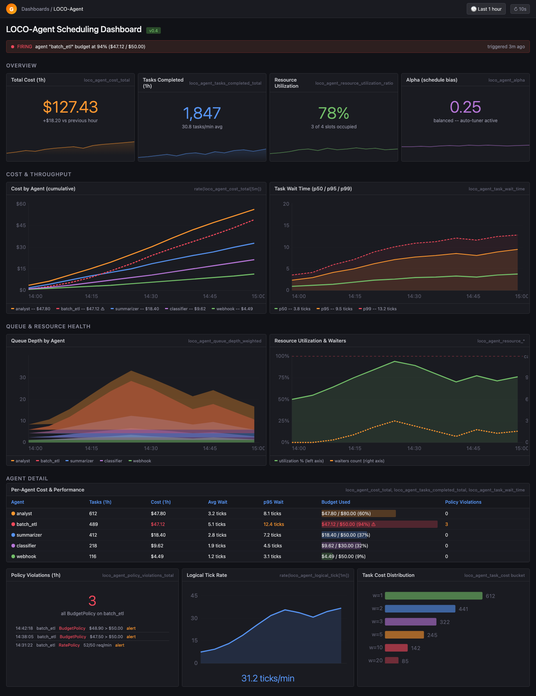

Cost firewall for AI agents.
LOCO-Agent is the open-source scheduler, budget circuit breaker, and cost attribution layer for teams running agentic AI in production. Wrap the calls you already make. See who spent what. Decide who gets the next expensive slot.
pip install loco-agent
$ loco doctor
found: anthropic, openai, google-adk, langchain
suggested: shared scheduler with capacity=3
$ LOCO_LOG=pretty python production_agents.py
[ENQUEUE] security model=opus team=soc workflow=incident-review
[GRANT] security score=0.91 budget=critical-path remaining
[WAIT] growth model=sonnet queue=17.0 reason=capacity
[FLAG] support mode=downgrade budget=exceeded
[ATTR] soc workflow=incident-review model=opus cost=5.0
$ python - <<'PY'
print(scheduler.metrics.attribution.cost_by_team())
PY
{'soc': 91.0, 'support': 38.0, 'growth': 19.0}Built for builders who read the invoice.
Every agent framework makes it easier to call a model. LOCO is for the moment after that: when the demo becomes a system, traffic spikes, premium models get expensive, and someone asks where the tokens went.
No black-box traffic cop.
LOCO is a Python library you run in your app. The load equation is documented, deterministic, testable, and small enough to understand.
Cost starts at the task.
Attach team, workflow, model, session, tenant, and outcome metadata where the agent actually does work.
Budgets are runtime policy.
Set limits per agent, team, or tenant, then reject, alert, or flag downgrade paths before the call becomes a surprise line item.
Priority rules do not survive bursts.
LOCO re-scores waiters on each release, so urgent work can climb while long-running batch jobs still make progress.
Adapters, not lock-in.
Anthropic, OpenAI, Google ADK, LangChain, CrewAI, Bedrock, AutoGen, and plain async Python compete for the same shared slots.
Ops should see the queue.
Export scheduler state, wait time, utilization, policy violations, trust scores, and cost attribution into the stack you already operate.
The CFO view and the SRE view are the same trace.
LOCO connects the dispatch decision to the spend story: who waited, which model ran, which budget was touched, and whether the outcome was worth the tokens.
- Cost by team, workflow, model, agent, and session
- Token-to-outcome tracking for ROI attribution
- Trust scoring and multi-tenant isolation
- Prometheus metrics plus an importable Grafana dashboard

Same policy across the agent zoo.
Your LangChain batch job, ADK webhook handler, OpenAI assistant, and Anthropic analyst should not each invent their own concurrency, budget, and attribution rules.
Wrap one call. Keep control.
Start with `loco.wrap()` around any async LLM call. Add adapters, budgets, tenant pools, policy enforcement, and dashboards as the system grows.
import asyncio
import loco
async def call_llm(prompt: str):
return await your_model_client.generate(prompt)
async def main():
loco.configure(capacity=3, budget_mode="downgrade")
loco.set_budget("support", max_cost=25.0)
await loco.wrap(
call_llm,
agent_id="support",
weight=2.0,
prompt="summarize customer thread",
)
attr = loco.get_scheduler().metrics.attribution
print(attr.cost_by_model())
asyncio.run(main())